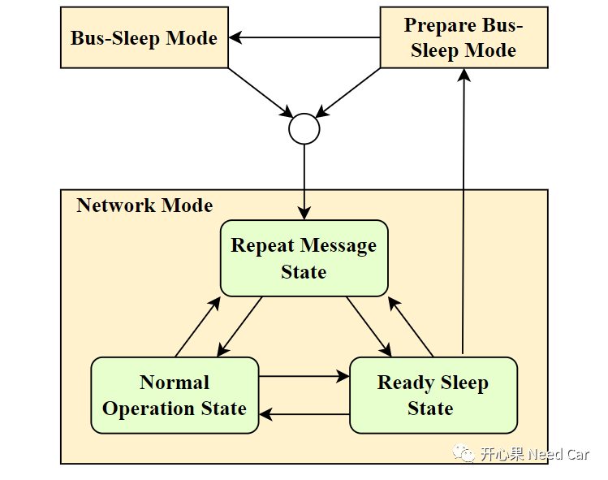
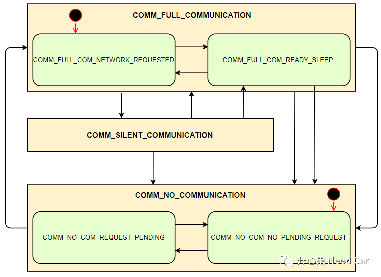

开心果 Need Car · 2022-12-02T10:01:00+08:00 · 微信原文
本文聚焦一个问题："CanNM网络状态变化是否都需要告知ComM?"之所以讨论这个问题，源于一个小伙伴的提问，Ta的问题:"Autosar网络管理中，进入RSS（Ready Sleep State）状态，网络管理报文停发，应用报文可以发送。但是，调用CanNm_NetworkRelease()接口，会请求ComM，ComM对应的Channel会进入COMM_SILENT_COMMUNICATION模式，也就是只收不发的模式，那RSS状态下还怎么发送应用报文呢？"
看完这个问题，你觉得应该是怎样的呢？首先，我个人认为这是一个好问题，是一个有思考的问题。和一些搞Autosar_嵌入式的小伙伴交流，很多问题的思考都很有深度，只奈我时间有限，不能把很多小伙伴的问题都整理出来。但是，我看到的问题，有时间，我会整理出来，我记的"你"的问题。本文，分享一下个人对这个问题的理解。
1、CanNM和ComM状态机
首先，先搞清楚CanNM和ComM的状态机有哪些？
（一）CanNM的网络状态机

（二）ComM的网络状态机

如上图，ComM包含三个Mode：COMM_NO_COMMUNICATION、COMM_FULL_COMMUNICATION、COMM_SILENT_COMMUNICATION。其中，COMM_NO_COMMUNICATION包含两个子状态：COMM_NO_COM_NO_PENDING_REQUEST、COMM_NO_COM_REQUEST_PENDING；COMM_FULL_COMMUNICATION也包含两个子状态：COMM_FULL_COM_NETWORK_REQUESTED、COMM_FULL_COM_READY_SLEEP。
提示：User请求通信时，只能请求COMM_NO_COMMUNICATION、COMM_FULL_COMMUNICATION两种模式，COMM_SILENT_COMMUNICATION模式，User不能请求，ComM内部处理此状态。
2、CanNM的状态切换对ComM的影响
CanNM和ComM的状态机里有什么玄机呢?这里，想解释这样一个问题：
调用CanNm_NetworkRelease()接口，会触发ComM对应的Channel会进入COMM_SILENT_COMMUNICATION模式吗？
首先，要清楚：调用CanNm_NetworkRelease()接口，会将CanNM对应Channel的子状态切换到RSS状态，但是并未有切换Channel的Mode，即：CanNM的Channel仍然在NM模式下。
而Autosar的规范中，对于CanNM状态切换到RSS子状态，并不要求其通知到ComM。所以，如果是单纯的调用CanNm_NetworkRelease()接口，并不会影响ComM的状态切换，也就是ComM此时不会切换到COMM_SILENT_COMMUNICATION模式，ComM应该继续保持在之前的模式中，eg：COMM_FULL_COMMUNICATION。因此，应用报文的通信不受影响。这就是我个人对本文焦点问题的答案。
提示：CanNM的Channel在RSS状态下，不发网络管理报文，应用报文的通信不受影响。
3、CanNM的状态切换，何时通知ComM？
ComM_Nm_NetworkMode()：网络模式进入NM模式；
ComM_Nm_PrepareBusSleepMode()：网络模式进入PBSM模式；
ComM_Nm_BusSleepMode()：网络模式进入BSM模式。
如上接口，可以看出一个规律：只有CanNM的Mode切换时，会通知到ComM，而State的切换属于模块的内部状态跳转，一般不会通知到其他模块。所以，如果单纯调用CanNm_NetworkRelease()接口，只是切换CanNM的State，没有改变CanNM的Mode，不会通知到ComM，ComM也不会切换到COMM_SILENT_COMMUNICATION模式。
一般不建议User直接调用CanNm_NetworkRelease()接口，User可以请求ComM的ComM_RequestComMode()接口，进行通信请求。由ComM协调NM调用CanNm_NetworkRelease()接口，进一步的协调网络状态和通信栈的通信行为。
往期精彩回顾